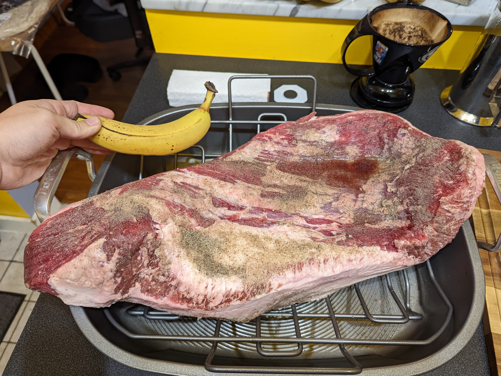
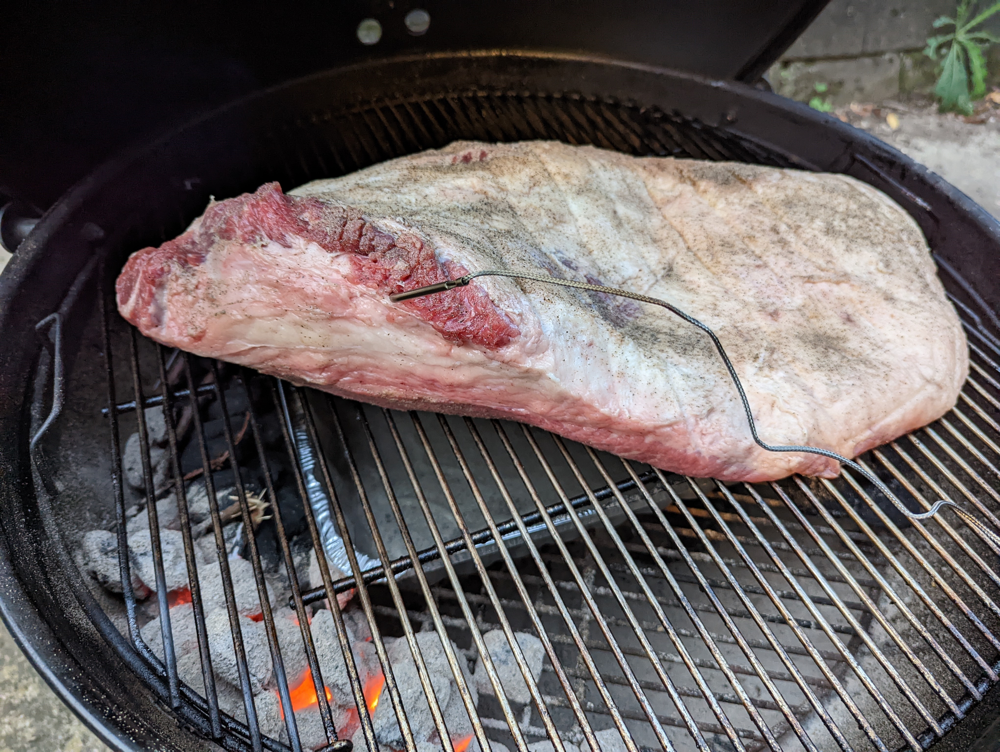
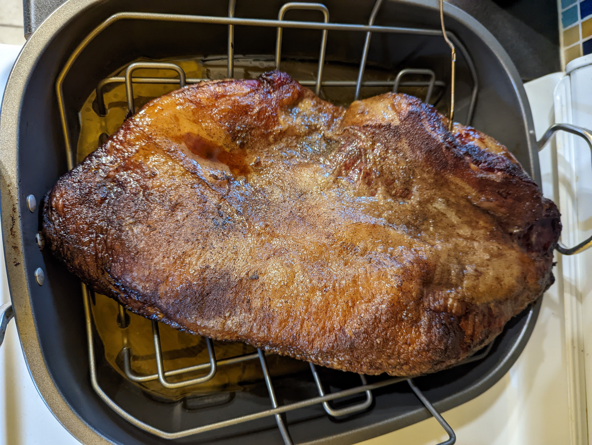

Instructions
- The night before, rub brisket with salt and pepper mixture and let sit overnight in the fridge.
- Take brisket out of fridge and bring to room temperature for half an hour. While you're waiting, light charcoal for the grill.
- Boil some water for the drip tray.
- Arrange some unlit charcoal in a long line around the edge of the grill. Optionally, sprinkle on some wood chips. Once lit charcoal has turned white, pour it at one end of the line.
- After you have added the lit charcoal, place a drip tray in the middle of the grill and fill with boiled water.
- Leave brisket to smoke for many hours (about 1 hour per pound). Grill temperature should be 250F-300F. Ideally, you want to smoke the brisket until is stays at 200 for 2 hours.
- After a few hours of smoking, you can also pull the brisket off the grill and put it on a roasting pan (with more water underneath) in a 300F oven. Cover the roasting pan with foil at the beginning, and remove foil for the last two hours so that a crust can form. (You can also cook the brisket in the oven only, e.g. https://www.thekitchn.com/brisket-recipe-259081)
Notes
Sept 17 2022
- Cooked a 15.8 pound brisket for 12 hours, but it only hit 195F at the very end so it could have used 2 more hours. It was still relatively tender, but not quite melt-in-your-mouth.
- 7 hours in grill ~250F, 5 in oven at 300F (covered for first 2.5, uncovered for last 2.5).
- Made my line of charcoal in the grill 2 wide with a third right balanced in the middle of the lower two. The temp was a little low, and it struggled to keep going at a few points, so maybe do a double-layered line next time.